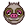
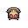

Pokédex / #287

Slakoth #287
Normal
The way Slakoth lolls around makes anyone who watches it feel like doing the same.
Generation 3 · Hoenn
Stats
| Attack | 60 | |
|---|---|---|
| Defense | 60 | |
| Sp. Atk | 35 | |
| Sp. Def | 35 |
In the wild
| Wild level | 20–30 |
|---|---|
| HP | 30 |
| Experience | 5 |
| Egg groups | Field |
Evolution
- Evolves into Vigoroth at level 30.
Moves
| Level | Move | Type | Category | Power | Energy | Cooldown | Effect | |
|---|---|---|---|---|---|---|---|---|
| 1 | Tackle | Normal | Physical | 15 | 15 | 1s | Tackle is one of the most common and basic moves a Pokemon learns. It deals damage with no additional effects. | |
| 5 | Scratch | Normal | Physical | 40 | 40 | 6s | Scratch inflicts damage and has no secondary effect. | |
| 10 | Faint Attack | Dark | Physical | 60 | 60 | 9s | Faint Attack deals damage and ignores changes to the Accuracy and Evasion stats. | |
| 15 | Covet | Normal | Physical | 60 | 80 | 20s | The user endearingly approaches the target, then steals the target's held item. | |
| 20 | Chip Away | Normal | Physical | 70 | 70 | 11s | Looking for an opening, the user strikes consistently. The target's stat changes don't affect this attack's damage. | |
| 25 | Yawn | Normal | Status | – | 100 | 95s | In the turn that Yawn is used, the only effect will be the user yawning at the target. At the end of the next turn, the target (if still active) will fall asleep unless it gets affected by a major status condition in the meantime, a status-protecting move is used (like Safeguard or Uproar), or the battle ends. |
Field abilities
CutStrengthRock Smash
Special abilities
Truant
Egg moves
Technical machines
Aerial AceBlizzardBrick BreakBulk UpDouble TeamFire BlastFlamethrowerFocus PunchIce BeamProtectRain DanceRestRock SlideRock TombShadow BallShock WaveSolar BeamSubstituteThunderThunderboltToxic
Drops
| Item | Amount | Chance | |
|---|---|---|---|
| bunch of wheat | 1 | 66.7% | |
| bamboo leaves | 1 | 26.7% | |
| bamboo stick | 1 | 26.7% | |
| bitten apple | 1 | 14.8% | |
| acorn | 1 | 8.89% | |
| thorn seed | 1 | 6.67% | |
| cookie | 1–5 | 5% | |
| red apple | 1–5 | 5% | |
 | slakoth doll | 1 | 0.1% |
| Love Plate | 1 | 0.002% |